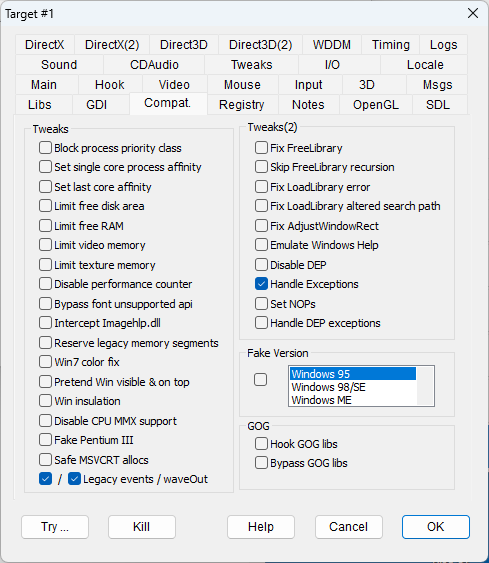

|
Block process priority class |
BLOCKPRIORITYCLASS |
Blocks a process' attempts to change its own priority class. Old fullscreen games may use this trick to get 100% CPU power dedicated to them, but on modern OSes and windowed environments, this could be a bad idea, interfering with other operations and overheating the processor for no reason. |
|
Set single core process affinity |
SINGLEPROCAFFINITY |
Some games are not properly synchronized to run on physically separate multi-core CPUs, or simply don't properly handle powerful CPUs. This option sets the program's core affinity so that the program is run by a single core (the first one). |
|
Set last core affinity |
USELASTCORE |
Same as SINGLEPROCAFFINITY, but picks the last CPU core. |
|
Limit free disk area |
LIMITFREEDISK |
Causes the query for available hard disk space to return a limited value. Some old games can't handle a very big integer number and see it as a negative value, refusing to start and usually showing a message claiming that there is not enough free hard disk space. |
|
Limit free RAM |
LIMITFREERAM |
Causes the query for available free RAM to return a limited value. Some old games can't handle a very big integer number and see it as a negative value, refusing to start. NOTE: The "Inject DLL" injection mode may be required for this option to work. Usually, games that need this flag crash immediately at the start complaining about the lack of memory. However, there are exceptions to this rule. For example, "Dungeon Keeper" crashes randomly during the gameplay if this flag is not enabled. |
|
Limit video memory |
LIMITVIDEORAM |
Causes the query for available video memory to return a limited value. Some old games can't handle a very big integer number and see it as a negative value. |
|
Limit texture memory |
LIMITTEXTURERAM |
Causes the query for available video texture memory to return a limited value. Some old games can't handle a very big integer number and see it as a negative value. |
|
Disable performance counter |
NOPERFCOUNTER |
Since the performance metrics hardware is not mandatory on a PC, this flag disables the GetPerfCounter() performance metrics API, simulating an unsupported condition. Usually, in this condition, the software should rely on other performance measurement metrics that are more conveniently manipulated by the DxWnd timing hooks. It should be set when, despite the time acceleration feature, the program doesn't seem to behave according to the imposed speed ratio. |
|
Bypass font unsupported api |
FONTBYPASS |
Some games may attempt to manage old font styles that were present by default on legacy platforms and are no longer supported. This flag simulates a success operation to let the program continue and run. Of course, the font will be wrong, but Windows will approximate the choice with the most similar available font. |
|
Intercept Imagehlp.dll |
NOIMAGEHLP |
Intercepts unsupported calls in "imagehlp.dll", returning a clean error condition so that the program doesn't crash. One notable game that needs this flag is "The Fifth Element". |
|
Reserve legacy memory segments |
LEGACYALLOC |
Old 16-bit programs for Windows 95 and Windows 98 relied on the availability of memory from address 0x4000000 to 0x8FFFFFF, even though they never explicitly allocated it. Recent OSes don't guarantee this memory availability. This flag, combined with the "Inject DLL" injection mode, reserves memory in this range when the program starts up, before that memory can be used for other purposes. |
|
Disable Max Windowed Mode |
DISABLEMAXWINMODE |
Invokes DirectDraw SetAppCompatData(12,0) to set the DisableMaxWindowedMode. |
|
Win7 color fix |
COLORFIX |
As described in a DirectDraw hack, this flag fixes a color problem that Windows 7 has with 8bpp palettized modes. It only has an effect when the screen is actually set to an 8bpp color depth, which is now very rare. |
|
Pretend Win visible on top |
PRETENDVISIBLE |
When set, it forces the detection of the main window as always visible (IsWindowVisible will always return TRUE) and on top of the z-order (GetTopWindow always returning the main window handle) as one would expect from a fullscreen program window. |
|
Win insulation |
WININSULATION |
Avoids enumerating windows so that the program can't interfere with them. It is useful for the game "Tribal Rage", which interferes with the desktop. |
|
Disable CPU MMX support |
DISABLEMMX |
Makes the CPUID assembler instruction to return a CPU state without MMX support. Fixes "The New Adventures of the Time Machine" game. |
|
Safe MSVCRT allocs |
SAFEALLOCS |
The "msvcrt.dll" library contains the implementation of C/C++ allocation routines: malloc, free, realloc. Many bugs may come from errors in using the addresses returned by and fed to these calls. The flag tries to prevent some problems by wrapping the allocated areas with a small preamble that identifies the correct usage of these functions. In particular, it avoids free operations on bad addresses (either because they are already freed or just wrong), skipping a potential cause of a game crash. |
|
Legacy events / waveOut |
HOOKLEGACYEVENTS, HOOKLEGACYWAVE |
The winmm.dll library holds two functions that can use callback procedures, namely timeSetEvents and waveOutOpen. These callback functions are defined with WINAPI calling convention, but in the early stage of Win9X systems some games (mainly, most of the Mechwarrior 2 episodes) inherited the former callback procedures that were used in the DOS game versions and used a different calling convention, at that time still working but now no more. These two flags activate a WINAPI wrapper for the legacy callbacks that takes care of saving and restoring the CPU registers and avoid exceptions. |
|
Fix FreeLibrary |
FIXFREELIBRARY |
Fixes FreeLibrary, simulating a return code of 0 (error) when attempting to free an unallocated module as Windows 95 and 98 would. Use this flag to fix the endless loop problem in "Heavy Gear" version 1.2. |
|
Skip FreeLibrary recursion |
SKIPFREELIBRARY |
Corrects an issue with the FreeLibrary invocation that ends up in a recursive call causing a stack overflow. This fixes Disciples Sacred Lands' crash at startup. |
|
Fix LoadLibrary error |
LOADLIBRARYERR |
Returns ERROR_DLL_NOT_FOUND instead of ERROR_MOD_NOT_FOUND error code. This fixes "Nightmare Creatures". |
|
Fix LoadLibrary altered search path |
FIXALTEREDPATH |
Corrects an issue with the standard and alternate search strategy in LoadLibraryEx by adding the current working directory to the search path, so that the files can be linked while staying in the original place. It is needed for the game "Anachronox". |
|
Fix AdjustWindowRect |
FIXADJUSTWINDOWRECT |
Selectively turns the AdjustWindowRect coordinate patching. This flag must be checked for "Manx TT Super Bike" and unchecked for "Imperialism II". |
|
Emulates Windows Help |
EMULATEWINHELP |
Provides a partial WinHelp support by running "WinHelp.exe" and the target .hlp file as argument. WinHelp with full capabilities is no longer supported by Microsoft for security reasons, but running the WinHelp program alone can provide some basic functionalities without support for the vulnerable macros and other full-fledged features. |
|
Handle Exceptions |
HANDLEEXCEPTIONS |
Setting this flag causes DxWnd to set its own exception handler that tries (often successfully) to fix several common exceptions, such as the divide by zero exception in old games which tries to calculate the CPU speed. This is a good flag to try and fix random crashes. See also the following FORCENOPS flag |
|
Set NOPs |
FORCENOPS |
Some assembly instruction exceptions may generate exceptions only on certain circumstances, so it is reasonable to jump the faulty instruction, leaving it in place for the following occasions. But in some cases this practice can give bad results, so this flag replaces the faulty instruction with a sequence of NOP (no operation) instructions so that the exception never gets repeated. |
|
Suppress DEP |
SUPPRESSDEP |
This flag depends on the "Handle Exceptions" flag. DxWnd detects a specific exception type that could be caused by the lack of execution permission in the memory segment and in this case tries to assign execution permission to the data segment where the instruction lies. This situation can occur with legacy programs targeted to Windows versions that didn't prevent the execution of code in data segments. On recent versions of Windows, this execution is restricted (see DEP - Data Execution Prevention) because it is typical of malicious code and could be harmful if the execution of code is allowed. So, the flag must be used carefully and at your own risk, allowing it only on specific and trusted programs. |
|
Fake Version |
FAKEVERSION |
Causes the program to detect the chosen Windows version. Notice: This is not the same thing as the compatibility setting of Windows' "Properties" panel, which also adjusts the system's behavior to emulate the chosen platform. |
|
Hook GOG libs |
HOOKGOGLIBS |
Games distributed by GOG (gog.com) sometimes apply compatibility patches by changing the name and compatibility behavior of some system DLLs and routing system calls there. This flag causes DxWnd to hook these custom libraries instead of the system equivalent. Only use this flag on certain GOG games. |
|
Bypass GOG libs |
BYPASSGOGLIBS |
The purpose of this flag is similar to that of HOOKGOGLIBS. It is sometimes a better solution to avoid rerouting the system calls to custom DLLs and instead map them to system DLLs. This flag breaks GOG's system call rerouting. Only use this flag on certain GOG games. |